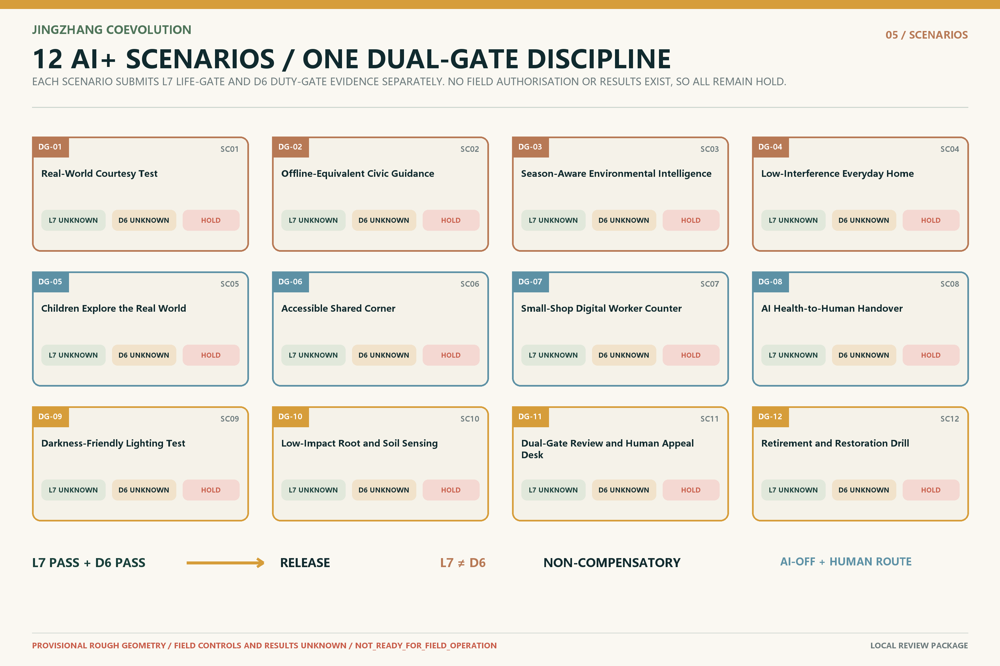

Corridor and regional relations
Studies the civilizational axis, industry networks, ecological continuity and regional innovation links without presenting research relationships as approved administration or investment.
Centennial Jing-Zhang AI Innovation Belt · Professional Design Package
AI can enter the city; the city cannot exit the living world.
Life has ground. Civic AI passes both gates. Coevolution becomes possible.
The Jing-Zhang corridor is read as a civilizational timeline, while continuous living ground is the primary spatial structure. Boundaries and focus areas are participant-authored provisional geometries for design exploration and must be recomputed when organizer-supplied files arrive.

Studies the civilizational axis, industry networks, ecological continuity and regional innovation links without presenting research relationships as approved administration or investment.
Organizes land use, mobility, blue-green space, public space, buildings and projects within a participant boundary, retaining a full-recalculation trigger for official geometry.
Zhongguancun AI Acceleration Area, Beijing AI Origin Community and Dazhongsi AI Industry Cluster are developed through explicitly provisional focus-area geometries.
Each area validates a different scale: the acceleration area tests industry coordination, the origin community tests everyday cohabitation, and Dazhongsi tests public review and re-entry responsibility within a historical urban fabric.

Places R&D, trials, audit and public explanation on one walkable verification chain: validate before scaling, and make failure visible and reversible.
Tests low-interference public service that does not require a phone, aligning the daily conditions of children, older people, commuters, visitors, maintainers and nonhuman life.
The COEVOLUTION THRESHOLD / 相成门槛 publicly exposes L7, D6, HOLD status, accountable parties, stop conditions and repair evidence.
The land-use structure is a design model, not statutory planning. Each zone first asks how air, water, soil, roots, shade, darkness, quiet and biodiversity remain continuous; industry and public service are layered only after that.

Rail nodes, continuous walking, cycling and accessible routes connect the three focus areas. Freight, maintenance and emergency access join everyday right-of-way rather than transferring efficiency costs to pedestrians and ecology.
LIVING GROUND means physical continuity of air, water, soil, roots, shade, darkness, quiet and biodiversity—not a digital twin and not an AI proxy that makes nature “speak.”

The sequence is retain first, repair before replacement, adaptive reuse, then reversible insertion. Height, FAR, setbacks and retain/renovate/demolish/new-build conclusions await official controls and professional confirmation.
Retain usable buildings and familiar routes; use low-disturbance repair to improve safety, climate adaptation and accessibility.
Reserve ground floors and courtyards for shared service, maintenance, appeal and ecological observation; digital service cannot become an entry threshold.
New intelligent components must be identifiable, stoppable and replaceable; withdrawal cannot disable basic building use or living continuity.
Projects move from baseline and pilots through review into everyday operation. Every phase identifies participant types, auditable metrics, stop conditions and repair responsibility; later benefits never compensate for an earlier gate failure.
Establish L7 living-condition baselines, D6 civic-AI duty evidence and publicly legible HOLD states through small, withdrawable trials.
Expose technical, accountability and ecological deviation at the interface; crossing a stop line triggers shutdown, repair and renewed dual-gate review.
Scale only services that pass both gates and remain publicly understandable; budget for annual audit, appeal, maintenance and exit.
AI is not a living species, and life is not an AI data feed. Twelve scenarios form reviewable contracts around a specific public space, users, maintainers, risks, stop conditions and recovery paths.

Seven living conditions independently test air, water, soil, roots, shade, darkness/quiet and biodiversity—the first gate before any intelligent system enters civic space.
D6 records identity, purpose, data, accountability, stop and repair duties. A high duty score cannot offset an L7 failure, and an unknown condition never passes by default.
A measurable spatial contact between people, nonhuman life, building sections and intelligent systems. Deviation must trigger stop, repair and re-entry responsibility.
These three values are recomputable design-model outputs from submitted geometry. The visible numbers match their machine-readable page attributes, but their spatial basis remains provisional and requires complete updating after official geometry replacement.
Limit: FAR, building height, statutory green ratio, setbacks and demolition/build controls await official files. This page is not a planning-approval or professional-survey document.

Taskbook requirements are distributed across the human narrative, figures, scenario contracts and machine-audit layer. This is a reading index, not a substitute for the structured coverage matrices.
Governing formula, brand grammar, identity system and dual-gate status language.
Scenario contracts connect industry trials, public value and exit responsibility.
Work, dwelling, learning, care, maintenance, mobility and ecological moments.
Children, older people, commuters, visitors, maintainers, disabled users and nonhuman life.
Coevolution Threshold, Error Square and the civilizational timeline as reviewable landmarks.
Annual audit, global community, maintenance, appeal, stop, repair and re-entry.
Updating this page does not make validation pass. A new local conclusion exists only after the final file set completes deterministic, spatial, visual and professional replay and writes the result to the persisted self-check record.
This page does not independently claim a pass, submission, review or approval. It makes no claim of a remote PR, merge or official endorsement.
Deterministic and manifest integrity, spatial topology and metric recomputation, offline visual packaging, and professional evidence/design depth. self_check.json is authoritative for the final state.
sources.json, GeoJSON, metrics, compliance and depth matrices, and scenario registers.SITE_BOUNDARY and three KEY_AREA polygons are not yet present; current geometries are low-confidence provisional constraints.